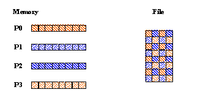
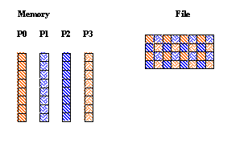
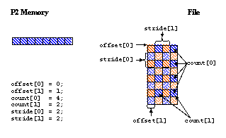
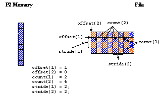

|
HDF5
1.15.0.4224aa0
API Reference
|

|
|
HDF5
1.15.0.4224aa0
API Reference
|
|
Navigate back: Main / Getting Started with HDF5 / A Brief Introduction to Parallel HDF5
This is another example of writing data into disconnected locations in a file. Each process writes data from the contiguous buffer into regularly scattered locations in the file.
Each process defines a hyperslab in the file as described below and writes data to it. The C and Fortran 90 examples below result in the same data layout in the file.
| Figure a C Example | Figure b Fortran Example |
|---|---|

|

|
The C and Fortran 90 examples use four processes to write the pattern shown above. Each process defines a hyperslab by:
| C | Process 0 | Process 1 | Process 2 | Process 3 |
|---|---|---|---|---|
| offset[0] = 0 | offset[0] = 1 | offset[0] = 0 | offset[0] = 1 | |
| offset[1] = 0 | offset[1] = 0 | offset[1] = 1 | offset[1] = 1 | |
| Fortran | Process 0 | Process 1 | Process 2 | Process 3 |
| offset(1) = 0 | offset(1) = 0 | offset(1) = 1 | offset(1) = 1 | |
| offset(2) = 0 | offset(2) = 1 | offset(2) = 0 | offset(2) = 1 |
| C | Fortran |
|---|---|
| count[0] = 4 | count(1) = 2 |
| count[1] = 2 | count(2) = 4 |
For example, the offset, count, and stride parameters for Process 2 would look like:
| Figure a C Example | Figure b Fortran Example |
|---|---|

|

|
Below are example programs for writing hyperslabs by pattern in Parallel HDF5:
| hyperslab_by_pattern.c |
| hyperslab_by_pattern.F90 |
The following is the output from h5dump for the HDF5 file created in this example:
The h5dump utility is written in C so the output is in C order.
Navigate back: Main / Getting Started with HDF5 / A Brief Introduction to Parallel HDF5
 1.9.7
1.9.7